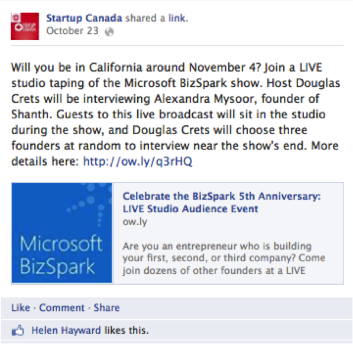
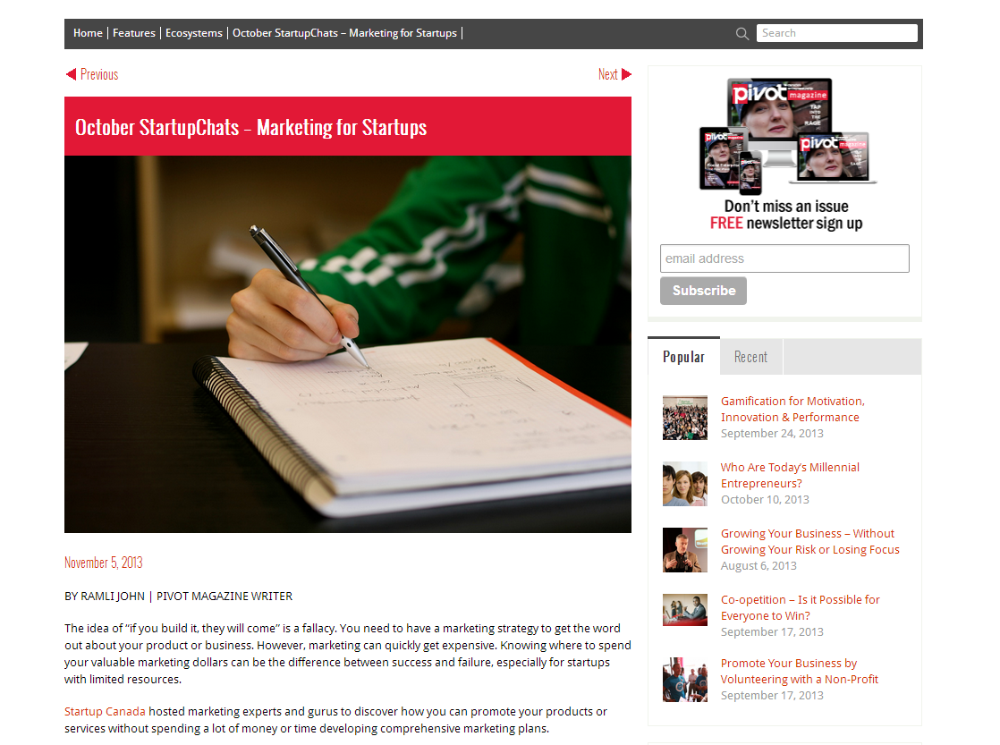

Startup Canada has been working in partnership with Microsoft to support entrepreneurs in Canada through a variety of programming including Facebook posts, #startupchats hosted on Twitter, events and articles featured in PIVOT magazine.
As a founding Platinum sponsor, Microsoft can expect the following commitments from Startup Canada:
On 30 October 2013, Startup Canada hosted a #StartupChats session with Paul Laberge of Microsoft on the topic of marketing in startups. This session had 11 participants, 9 listeners, 21 retweets and 35 favourites, and over 25 million Twitter impressions were generated. A summary of the chat can be seen on Storify and a recap is posted on PIVOT magazine. The official description of the #StartupChats session is provided below:
Social Media can be a fantastic, cost effective way to market your business, yet how much do we really know about what legal risks can be involved? In this educational chat we will determine some best practices for social media to avoid legal risks.
Startup Canada broadcasts numerous updates to its extensive Twitter and Facebook follower base and reaches a significant number of people across social media. Several shoutouts to BizSpark were made on Facebook, and an example is provided below.
Overall, Startup Canada was able to generate over eight thousand Facebook impressions throughout the month via posts promoting Microsoft.
A recap article regarding various October #StartupChats sessions was posted on PIVOT magazine, and featured some advice from Microsoft on the topic of marketing in startups.
Startup Canada achieved a growing impact over the past four weeks via Facebook, LinkedIn and Twitter. The metrics below show an aggregate of "likes," comments and views across the three social networks.
Startup Canada continues to work on promoting Microsoft to entrepreneurs through its social media channels. Through the partnership of Microsoft and Startup Canada, a growing number of entrepreneurs have been reached through the social media campaigns hosted on Twitter, LinkedIn and Facebook. This month, the #StartupChats session with Paul Laberge was used to give attention to important entrepreneurial issues and position Microsoft as a thought leader on marketing.

Edward Kim
Data Coordination & Reporting Lead

John Henwood
Strategic Relations Assistant
Entrepreneurship Empowers Everyone TM/MD
© 2013 Startup Canada. All Rights Reserved.